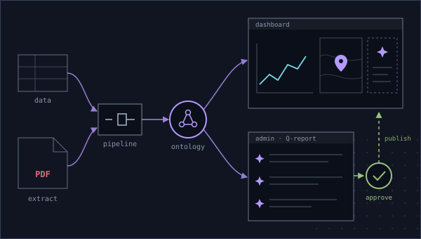

- AIP
- Ontology
- Pipeline Builder
- Workshop
AI-Generated Quarterly Reporting Platform
End-to-end Foundry build: data modeled through Pipeline Builder into an Ontology, a Workshop dashboard with graphs, a map and AI suggestions, and an admin Workshop where the quarterly report is generated entirely by AI from the data — every section and rule editable with AI, published to the main dashboard only after human approval.
My contribution: Data side and pipelines, Ontology design, the admin report-generation Workshop, PDF upload with AI data extraction, AI-assisted rule management and section editing, and the human-in-the-loop publish flow.
Client work under NDA — implementation details available on request.